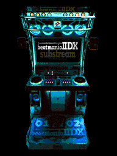

^ Home
 TECHNO Style Essentials
TECHNO Style Essentials is an Android chart database and tier list
for level 11/12 charts in beatmania IIDX. Quickly and easily look up charts,
including their NOTES RADAR data and normal/hard clear tiers, before your song
select time runs out.
Download
(version 1.3.0, 76 MB)
sha256: e7ff4b3d5eabb779ae683ddfd0faba86609f1220dac21ccfbbcf7f6620764c29
 New in version 1.3.0
New in version 1.3.0
- NOTES RADAR accuracy improved for all charts
- Letter grade and percentage is now displayed in chart list and details
- Add indicators for CN, HCN, and MSS in chart list
- Better differentiation of HYPER and LEGGENDARIA charts in the chart list
- Add TexTage links to chart details screen
- Add images for more songs
- Add ability to tap "tags" in chart details to copy to clipboard
- Fix character encoding issues with certain song titles
- Fix crash when Kamaitachi username validation times out
1.2.0
- Chart data updated for IIDX 31 EPOLIS and 32 Pinky Crush
- Japanese localization
- Material You themed app icon support (Android 13+)
- Fix color contrast issues in dark mode
1.1.2
- Fix score import for charts with multiple music ids
1.1.1
- Fix bug where scores without a BP wouldn't sync
1.1.0
- Kamaitachi integration! See your clear lamp, EX Score, and miss
count on each song by linking your Kamaitachi
account.
- Performance improvements on slower devices
Screenshots
Other
Data sourced from atwiki bemani2sp11, NotesRadarBot, and RemyWiki.
beatmania IIDX © Konami Digital Entertainment Co., Ltd. This app does
not collect or send any personal data.


Last updated 26 Aug 2025